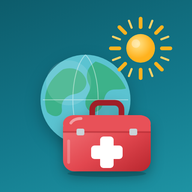

Возраст и вес
Укажите один раз — памятка покажет подходящие дозы, репелленты, солнцезащитные кремы и препараты по возрасту.
Что положить
Отмечайте собранное — прогресс виден вверху страницы. Дозы лекарств по весу ребёнка — в калькуляторе сразу после списка.
Питание малыша в дороге
Этот раздел виден, потому что вы указали возраст до 1 года.
Грудное молоко и смесь
- Грудное вскармливание — самое безопасное питание в поездке: не нужны вода, бутылочки и стерилизация.
- Смесь возьмите привычную, с запасом на всю поездку и ещё несколько дней. Без необходимости в дороге марку не меняйте.
- Воду для смеси вскипятите и остудите примерно до 70 °C — около 30 минут. Разведите строго по инструкции на банке, остудите до тёплой и проверьте на запястье.
- Негде вскипятить — бутилированная вода комнатной температуры; такую смесь давайте сразу, остатки выливайте.
- Недоеденную смесь не храните дольше 2 часов.
Бутылочки и прикорм
- Бутылочки и соски мойте горячей водой с моющим средством после каждого кормления и стерилизуйте; для питья и мытья — кипячёная или бутилированная вода.
- Прикорм возьмите привычный — каши и пюре, которые ребёнок уже ест. Новые продукты в поездке лучше не вводить.
- Открытую баночку пюре храните в холодильнике и не кормите из неё «с ложки» повторно — отложите порцию в тарелку.
- Не хватает смеси или прикорма на месте — подберите ближайший аналог вместе с педиатром онлайн или местным врачом.
Сколько давать
Введите вес ребёнка — посчитаем разовую дозу. Это ориентир для доз, назначенных на приёме; при сомнениях сверяйтесь с инструкцией к препарату.
Возраст: 1–2 года · изменить
Свечи с ибупрофеном
| Дозировка | Возраст | Вес |
|---|---|---|
| 60 мг | 3 мес – 2 года | 6–12 кг |
1 свеча до 3 раз в сутки (3–9 мес) или до 4 раз (9 мес – 2 года). Детям легче 6 кг — нельзя.
Свечи с парацетамолом
| Дозировка | Возраст | Вес |
|---|---|---|
| 50 мг | 1–3 мес | 4–6 кг |
| 100 мг | 3 мес – 3 года | 7–16 кг |
| 250 мг | 3–10 лет | 17–30 кг |
Между свечами — 4–6 часов, не чаще 3 раз в сутки. До 3 месяцев — только по назначению врача.
Цетиризин, капли
| Возраст | Доза |
|---|---|
| 6–12 мес | 5 капель 1 раз в день |
| 1–2 года | 5 капель до 2 раз в день |
До 6 месяцев цетиризин не применяют — выбор для малышей диметинден.
Чтобы лекарства не испортились
Выше этой температуры многие лекарства портятся. Используйте термосумку, не оставляйте в машине на солнце.
Аптечка всегда с вами, а не в багаже.
Оригинальная коробка и инструкция — проще на границе и у врача за рубежом.
Проверьте сроки годности до выезда.
Самолёт, машина, корабль
Уши в самолёте
- На взлёте и посадке малыша кормите грудью или из бутылочки, дайте соску.
- Старшим — попить, пожевать, рассасывать леденец по возрасту.
Укачивание
- До 2 лет дети укачиваются редко, чаще всего — в 7–12 лет. Начните с простых мер:
- Смотреть вперёд, на горизонт; не читать и не играть в телефон.
- Свежий воздух, спокойная музыка, ребёнок выспался перед дорогой.
Если этого мало — препараты:
| Препарат | Возраст | Разовая доза |
|---|---|---|
| Дименгидринат например, Драмина, таб. 50 мг | 3–6 лет | ¼–½ таблетки |
| 7–12 лет | ½–1 таблетка | |
| Меклозин например, Бонин, таб. 25 мг | с 12 лет | 1–2 таблетки |
- Дименгидринат — за 30 минут до поездки, при необходимости 2–3 раза в сутки. Меклозин — за 1 час, повторить не раньше чем через сутки.
- Первую дозу дайте дома заранее: у детей бывает сильная сонливость или, наоборот, возбуждение.
- До 3 лет препараты от укачивания не применяют; при эпилепсии и судорогах — нельзя.
Солнце и насекомые
Репелленты и кремы подобраны по возрасту, который вы указали в начале страницы.
Показано для возраста: 1–2 года изменить
Репелленты
Солнце
До 6 месяцев: тень, лёгкая закрытая одежда, панама, крем — минимально. Старше 6 месяцев: крем SPF 30+ с минеральными фильтрами за 15–20 минут до выхода, обновлять после купания.
Как наносить
- Сначала солнцезащитный крем, потом репеллент. Средства «2 в 1» не рекомендуются.
- На лицо — сначала себе на ладонь, потом ребёнку. Мимо глаз и рта.
- Не наносить на руки малышам и на ранки.
- Вернулись в помещение — смыть водой с мылом.
Солнцезащитные кремы по возрасту
Аптечная косметика. Возраст — по данным производителя; всегда сверяйте с упаковкой.
Для возраста: 1–2 года изменить
A-Derma Protect Kids, Avène детская линия, Mustela — возраст в доступных описаниях не указан, смотрите на упаковке. Для детей предпочтительнее минеральные фильтры (оксид цинка, диоксид титана); многие детские аптечные кремы содержат химические фильтры — они разрешены, если подходят по возрасту.
Без назначения врача не давать
Если едете далеко
До поездки
- Начните готовиться за несколько недель: часть прививок и профилактику малярии нужно начать заранее.
- Проверьте прививки по календарю. Для некоторых стран нужны дополнительные: например, от жёлтой лихорадки, гепатита А, брюшного тифа.
- Если в регионе есть малярия, детям нужна профилактика. Препарат врач подберёт по возрасту и весу.
На месте
- Комната с кондиционером или москитные сетки; сетка на коляску и автокресло.
- Длинные рукава и брюки на закате; одежду и сетки можно обработать перметрином.
- Грудное вскармливание — лучшая защита малыша от кишечных инфекций. Смесь возьмите с собой.
- Для питья и смеси — кипячёная или очищенная вода; ею же мыть бутылочки и соски.
- Не трогать и не кормить с рук бездомных и диких животных — собак, кошек, обезьян, белок, мышей, летучих мышей. Они кусаются и могут переносить бешенство и другие инфекции; после любого укуса или царапины — в тот же день к врачу.
Срочно к врачу, если…
Эти признаки нельзя пережидать в отеле или в дороге. Экстренный номер в России и многих странах — 112; за границей заранее узнайте местный номер и телефон ассистанса в страховке.
Температура после поездки в зону малярии
Укус или царапина животного
Признаки обезвоживания
Кровь в стуле или высокая температура с диареей
Сильный солнечный ожог у малыша
Температура не снижается, неожиданная сыпь

Сохраните памятку на телефон
После первого открытия памятка работает без интернета — в самолёте, в роуминге, на пляже. Добавьте её на экран «Домой», чтобы открывать как приложение.
Приятного отдыха!
Пусть аптечка вернётся домой нетронутой.